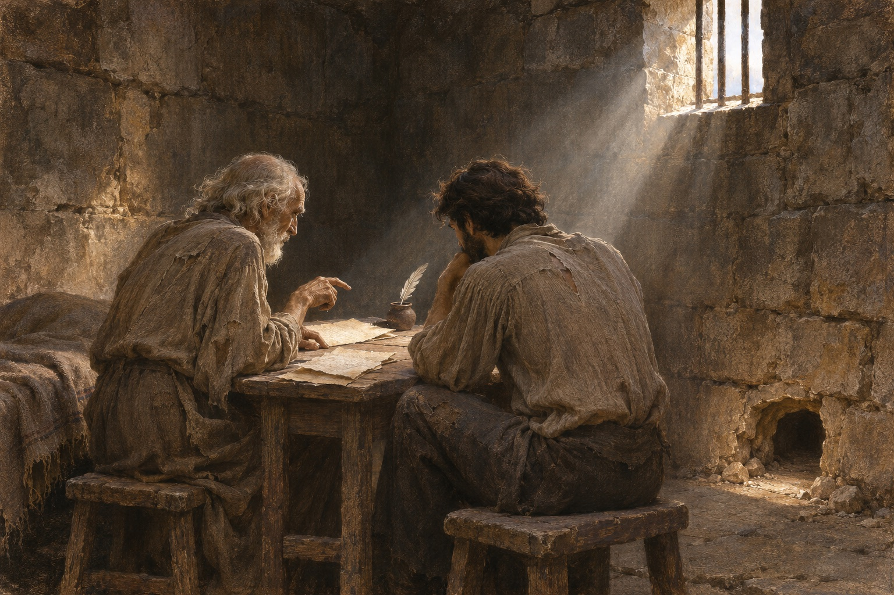
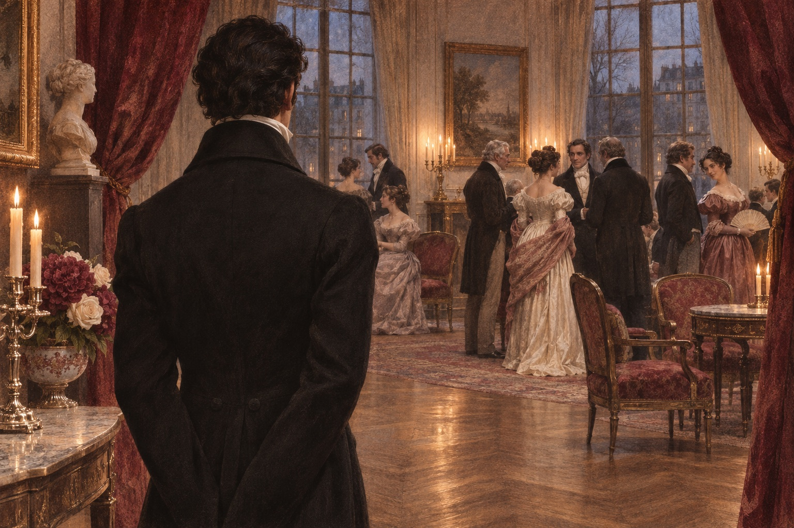

法老号归来
1815 年 2 月，法老号驶进马赛港。船长勒克莱尔在途中病死，临终前把船交给年轻的大副爱德蒙·唐泰斯。十九岁的唐泰斯把船平安带回，船东莫雷尔拍着他的肩说：孩子，你干得好。他上岸先去看父亲——老人住在昏暗的阁楼里，欠着三个月的房租。然后是未婚妻梅尔塞苔丝，一个加泰罗尼亚渔民的女儿，眼睛黑得像夜。他们定在第二天订婚。船上有个记账员叫唐格拉尔，看着这一切，把一支笔捏断了。唐泰斯把船靠岸时，码头上有人喊：法老号回来了！莫雷尔跑下台阶，抓住他的手说：勒克莱尔呢？唐泰斯低下头。莫雷尔沉默了一会儿，说：你来当船长。
匿名告密
唐格拉尔嫉妒唐泰斯要当船长，费尔南嫉妒他娶了梅尔塞苔丝。两个人在酒馆里合计，由唐格拉尔执笔，写了一封匿名信：王室检察官先生，请留意法老号上的爱德蒙·唐泰斯，他奉拿破仑之命，携密信往巴黎。费尔南把信投进邮筒。卡德鲁斯在场，看着他们写完，什么也没说。三个不同程度的参与者，用嫉妒、爱情和怯懦，把一个什么都不知道的青年推向了深渊。唐格拉尔写完信，念了一遍，递给费尔南。费尔南问：这会杀了他吗？唐格拉尔说：不会，只会让他消失。费尔南把信折好，放进信封。
喜宴上的逮捕
订婚宴上，宪兵闯进来，把唐泰斯带走。他相信自己无罪，还回头对梅尔塞苔丝说：别怕，我问几句话就回来。梅尔塞苔丝追到门口，被拦下。唐泰斯被押到代理检察官维尔福面前，讲了全部经过，包括那封要交给巴黎什么人的信。维尔福听着，脸色越来越白——收信人是他父亲努瓦蒂埃，一个波拿巴党人。他烧掉信，把唐泰斯关进伊夫堡，罪名是“波拿巴党间谍”。维尔福问：你认识努瓦蒂埃吗？唐泰斯说：不认识，那是收信人。维尔福的手停在半空，然后说：把他带下去。唐泰斯问：我犯了什么罪？他说：叛国。
被烧毁的信
维尔福烧信的时候，唐泰斯还抱着希望。他以为只要说清楚，就能回家。可那封信烧完，维尔福抬起头，说了一句：押下去，严密看管。唐泰斯被推进伊夫堡的地下牢房，编号 34。他不知道，那个判他入狱的人，正是靠这封信保住了自己的前途，娶了一位保王党贵族的女儿，从此官运亨通。维尔福回到家里，对未婚妻勒内说：今天判了一个波拿巴党间谍。他说这话时，手在发抖。她问：你冷吗？他说：不，我只是累了。唐泰斯被推进牢房时，回头喊：我要见检察官！狱卒把铁门关上。他听见钥匙转动的声音，那是他此后十四年每天听见的声音。
等待的人
唐泰斯的父亲在贫困中死去。老人临终前一直念着儿子的名字，邻居只听见他喊：爱德蒙，爱德蒙。莫雷尔替他付了房租和丧葬费，还在报纸上登了寻人启事，没有人理。梅尔塞苔丝等了两年，每天到码头去问，后来嫁给了费尔南。唐泰斯在牢里不知道这些，他只知道每天有人送饭，饭是冷的。梅尔塞苔丝嫁给费尔南那天，加泰罗尼亚村的人都去了。她穿着白裙子，脸上没有笑。有人问她：你爱他吗？她说：他对我好。
被埋下的孩子
维尔福年轻时与唐格拉尔夫人有过一段私情，生下一个孩子。他怕丑闻，把婴儿装进盒子，埋在自己家的花园里。当晚，贝尔图乔——一个来找维尔福报仇的科西嘉人——看见他埋东西，以为埋的是金子，挖开一看是个活着的婴儿。贝尔图乔抱走了孩子，刺伤了维尔福，从此成了通缉犯。那个孩子后来叫贝内代托。贝尔图乔抱走婴儿时，孩子哭了。他捂住孩子的嘴，跑出花园。维尔福在后面喊：谁在那里？他没有回头。那个孩子后来叫贝内代托。
墙后的另一个人
唐泰斯用铁锅碎片和凿子挖了六年，以为在挖向自由，结果挖进了隔壁牢房。对面是法里亚神甫，一个被所有人认为疯了的学者。两个人隔着石墙第一次说话时，唐泰斯已经独自待了六年。法里亚说：我挖了五年，算错了一个数，挖到了你这里。唐泰斯笑了，那是他六年来第一次笑。法里亚第一次跟他说话，问：你判了多少年？唐泰斯说：无期。法里亚说：那你比我好，我还有三年。唐泰斯说：三年之后呢？法里亚说：死。
其一挖错的方向
唐泰斯用铁锅碎片和凿子挖了六年，以为自己在挖向自由，结果挖进了隔壁牢房。对面是法里亚神甫——一个被所有人认为疯了的学者。两个人隔着石墙第一次说话时，唐泰斯已经独自待了六年。
其二十四年
法里亚教他数学、物理、语言和剑术，还把基督山岛的宝藏告诉了他。两人一起挖了五年，法里亚病死在牢里。唐泰斯裹上他的尸布，被狱卒扔进海里——十四年，他从一个水手变成了一个握有知识、财富和仇恨的人。
看清陷害者
法里亚帮唐泰斯理清了入狱的经过。他听完，只问了一句：那封信是写给谁的？唐泰斯说：写给巴黎的努瓦蒂埃先生。法里亚沉默良久，说：努瓦蒂埃是维尔福的父亲。唐泰斯愣住，然后明白了全部——他被关在这里，不是因为政治，是因为维尔福要保住自己的前途。那一刻他没有哭，只是把凿子握得更紧。唐泰斯明白真相后，在墙上刻了一个字：等。他说：我要出去，我要找到他们，我要让他们一个一个地还。法里亚说：你会变的。他说：我已经变了。
海黛的故国
法里亚给唐泰斯讲了一个故事：三十年前，他给红衣主教斯帕达当秘书。主教临终前告诉他，家族有一笔宝藏，藏在基督山岛。他找了半辈子，没找到。他把藏宝图说给唐泰斯听，说：我算过，就在那个岛的岩洞里。唐泰斯问：你为什么告诉我？法里亚说：因为我快死了，而你还年轻。法里亚说：宝藏不算什么，我真正想留给你的，是我这二十年想明白的东西。唐泰斯问：想明白了什么？他说：人可以被关起来，但思想不能。法里亚把藏宝图念了三遍，让唐泰斯背下来。他说：我死了以后，你把我的尸体搬到你的牢房，自己钻进麻袋。唐泰斯问：你呢？他说：我已经死了。
法里亚的遗产
法里亚病倒了。第三夜，他抽搐着抓住唐泰斯的手，说：抽屉里……基督山……都是你的。天亮时他死了。狱卒把尸体装进麻袋，准备扔进海里。唐泰斯把法里亚抱到自己的牢房，自己钻进麻袋。他被扛出去，扔下悬崖，落进海里。他割开麻袋，游向远处的一点灯光——那是伊夫堡的灯塔。这一夜，他三十三岁。唐泰斯被扔下海时，绳子勒得他喘不过气。他割开麻袋，游出水面，看见伊夫堡的灯火在远处。他对自己说：从今天起，爱德蒙·唐泰斯死了。
从海中逃生
唐泰斯在水里游了一夜，被一艘走私船救起。他谎称是水手，跟着船走了几个月，学会了走私犯的全部本事。船路过基督山岛时，他借口受伤留在岛上。他在岩洞里找了三天，终于在一块石头后面看见一个洞口。他搬开石头，走进去，火把照见一堆金币、金条、宝石、教皇的冠冕。他坐在地上，笑了很久，然后哭了。他在岩洞里坐了三天，数那些金币。数到最后，他放弃了，说：不用数了，够用一辈子。他把金子装进箱子，搬上船，然后买下了这艘船。
藏在岩石后的财富
唐泰斯成了富翁。他没有立刻回法国，而是花了十年游历、学习、布局：他学会了七八种语言，学会了化学、医学、剑术，学会了在任何一个客厅里做一个让人舒服的人。他给自己编了十几个身份：布索尼神甫、威尔莫勋爵、水手辛巴达、基督山伯爵。他每一次出场，都是算好的。他第一次以基督山伯爵的身份出现，是在罗马的舞会上。他穿着一件黑天鹅绒外套，胸前挂着一枚不知名的勋章。有人问他是谁，他说：一个从东方回来的人。他第一次以伯爵身份出现，是在巴黎的剧院。有人问他的来历，他说：我从东方来，那里有金子，也有秘密。那人问：你有很多秘密吗？他说：比金子多。

神甫问旧事
基督山伯爵回到巴黎之前，先去了马赛。他找到一个叫卡德鲁斯的旧邻居，用一颗钻石换了一个故事。卡德鲁斯讲了当年那封匿名信，讲了费尔南怎么把信投进邮筒，讲了梅尔塞苔丝怎么嫁给了费尔南。伯爵听完，把钻石留下，说：这是你应得的。卡德鲁斯后来为了这颗钻石，杀了人。卡德鲁斯拿到钻石后，第二天就去赌场，输了一半。他回家对妻子说：我发财了。她说：你疯了。他说：我没疯，是这个世界疯了。卡德鲁斯讲完，伯爵问：你为什么不阻止他们？他说：我喝了酒。伯爵说：你喝了酒，我父亲饿死了。他把钻石放在桌上，走了。
贪婪的代价
卡德鲁斯出狱后，找到伯爵勒索。伯爵给了他钱，他嫌少，又偷了伯爵家的东西，被贝尔图乔抓住。伯爵没有杀他，只是把他关进地窖，饿了两天。卡德鲁斯出来时，看见桌上有一顿丰盛的晚餐，扑上去就吃。吃完才发现，那是他妻子做的最后一顿饭——她已经死了。他吃完那顿饭，才发现对面坐着的人是他二十年前出卖过的贝尔图乔。贝尔图乔说：卡德鲁斯，你还认得我吗？他张了张嘴，倒下去。卡德鲁斯吃的最后一顿饭，是他妻子做的。他吃完，才发现妻子已经死了——她在他出狱前就病死了，那顿饭是贝尔图乔做的。他吐了出来。
莫雷尔获救
莫雷尔的公司欠下巨债，到期日只剩三个月。他四处求贷，所有银行都关门。他准备自杀，最后一夜坐在办公室里写信。门开了，一个陌生人送来一封信和一张支票，说：罗马银行，汤姆生·弗伦奇。莫雷尔问：你是谁？那人说：一个受过你恩惠的人。他走后，莫雷尔看见支票上的数字，跪了下来。莫雷尔跪在地上，朱莉问：父亲，我们不用死了吗？他说：不用了。他哭得像个孩子。朱莉后来嫁给埃马纽埃尔，婚礼上，她说：我们要谢谢那个陌生人。
莫雷尔的最后期限
那个陌生人就是唐泰斯。他没有露面，只是在暗处看着莫雷尔一家哭成一团。他后来对贝尔图乔说：我父亲死的时候，是这个人替他付的房租。这笔账，我记了二十四年。他还让人把那艘旧船“法老号”的模型送到莫雷尔家，附了一张纸条：你还记得法老号吗。贝尔图乔问：你为什么不露面？伯爵说：因为我不想让他谢我。他谢我，这笔账就两清了。我要它一直欠着。伯爵在暗处看着莫雷尔一家，对贝尔图乔说：我父亲死的时候，是这个人替他付的房租。这笔账，我记了二十四年。贝尔图乔问：你要见他们吗？他说：不。
东方来的陌生人
罗马狂欢节，全城戴上面具。阿尔贝·德·莫尔塞夫和弗朗兹·德·埃皮奈在街上被卷入一场“绑架”——万帕的人在马车上把阿尔贝带走，关进圣塞巴斯蒂安墓穴。弗朗兹找到基督山伯爵，伯爵说：别担心，他只是被请去吃晚饭。果然，阿尔贝在墓穴里吃了一顿丰盛的晚餐，第二天被放出来，还跟万帕成了朋友。阿尔贝被带走时，弗朗兹要拔剑。伯爵说：别动，他们只是请他吃饭。弗朗兹问：你怎么知道？他说：因为是我安排的。弗朗兹看着他，第一次觉得这个人可怕。
狂欢节的面具
这场绑架是伯爵安排的。他要借万帕的手，让阿尔贝欠他一个人情，好进入巴黎的社交圈。他在罗马的剧院里第一次见到阿尔贝时，就已经算好了后面每一步：在哪一天救他，在哪一天出现在巴黎，在哪一天走进莫尔塞夫家的客厅。他像一个棋手，而巴黎是一张棋盘。
阿尔贝被绑架
阿尔贝被绑架那夜，万帕的人把他眼睛蒙上，带进一个地窖。他以为自己要死了，结果闻到饭菜的香味。万帕说：伯爵吩咐过，不能怠慢你。阿尔贝吃了一顿有六道菜的晚餐，喝了一瓶 1802 年的酒。第二天他回到罗马，对弗朗兹说：我这辈子没吃过这么好的饭。阿尔贝回到罗马后，逢人就说：基督山伯爵是我见过的最有教养的人。弗朗兹说：你被他绑架了。阿尔贝说：他请我吃了饭。
伯爵走进客厅
基督山伯爵在巴黎第一次设宴。他让仆人端上来自世界各地的珍馐：意大利的火腿、土耳其的蜜饯、中国的茶。他让阿里在门后持刀站立，让每一个客人都在席间感到不安。唐格拉尔试探他的财富，维尔福试探他的来历，莫尔塞夫伯爵夫人——梅尔塞苔丝——从进门起就没说话，只看了他一眼。晚宴结束时，伯爵送客到门口。梅尔塞苔丝走过他身边，低声说：你为什么要在我们家里出现？他说：因为我在你们家里吃过一顿饭，二十四年前。她愣住了。晚宴上，伯爵说：我这一生，只喝一种酒，产自基督山岛。唐格拉尔问：那岛上有葡萄园？伯爵说：有，还有别的。唐格拉尔的手停了一下。
客厅里的第一场晚宴
晚宴上，伯爵讲了一个故事：一个渔夫的儿子被人陷害，关进监狱十四年，出来后找到了宝藏，回来复仇。客人们听得入神，只有梅尔塞苔丝的手在发抖。她认出了那个声音。散席时她走过他身边，低声说：爱德蒙。伯爵没有回头，只说：夫人，您认错人了。她走后，伯爵在客厅里站了很久。他对自己说：她已经认出来了。可她没有揭穿我。这说明她还在乎。这个念头让他比复仇更难受。
一所不能遗忘的房子
伯爵买下奥特伊的一所房子，那是维尔福父亲努瓦蒂埃的旧宅。贝尔图乔劝他不要买，他说：我知道这里发生过什么。他让人挖开花园，挖出一个盒子，里面是一具婴儿的骨骸。他把盒子收起来，说：这是维尔福的账，总有一天要还。贝尔图乔看见那个盒子，脸色发白。伯爵问：你认得这个？他说：认得，那是我埋的。伯爵说：那你就该知道，维尔福是什么人。
信用与消息
唐格拉尔在银行里收到一封来自罗马的信，要他兑现一笔巨额汇票。他付了，心里不安。接着是第二封、第三封。他去查，发现这些钱都是从基督山伯爵的账户转来的。他想拒付，又怕得罪这位神秘的阔佬。他开始失眠，开始在夜里数金币。唐格拉尔去问银行家德布雷：基督山伯爵到底有多少钱？德布雷说：比你我加起来多一百倍。唐格拉尔说：那他为什么还要跟我做生意？德布雷说：你说呢。

海黛保存的记忆
海黛是阿里帕夏的女儿。父亲被费尔南出卖，死在城墙上，母亲和她被卖为奴。基督山伯爵在君士坦丁堡把她买下，养在身边，教她法语、音乐、历史。她知道自己是他的一枚棋子，也知道他对自己好。她叫他“主人”，但在心里叫他另一个名字。海黛第一次见到费尔南时，手里端着一杯咖啡。她把杯子放在他面前，说：先生，您的咖啡。费尔南抬头看她，看了很久，说：我见过你。她说：是的，在雅尼纳。
隔墙相爱的年轻人
瓦朗蒂娜是维尔福的女儿，马克西米利安是莫雷尔的儿子。两个人在维尔福家的花园里隔着一堵墙相爱。马克西米利安每天晚上翻墙进去，瓦朗蒂娜在窗口等他。他们不敢让任何人知道，因为维尔福要把女儿嫁给弗朗兹·德·埃皮奈。伯爵知道这件事，也知道这堵墙迟早会倒。马克西米利安每晚翻墙时，瓦朗蒂娜在窗口放一盏灯。有一天灯没亮，他在墙外站了一夜，第二天才知道她病了。他后来对伯爵说：那一夜我才知道，我离不开她。
假贵族登场
贝内代托是维尔福与唐格拉尔夫人的私生子，被贝尔图乔救下后，由一个乡下女人养大，取名卡瓦尔坎蒂。他长大后成了骗子，冒充意大利贵族，混进巴黎的沙龙。伯爵找到他，给他钱、给他身份、给他一套假的家谱，让他去娶唐格拉尔小姐。贝内代托不知道，自己正在走进一个为他量身定做的局。贝内代托第一次进唐格拉尔家时，穿了一身借来的礼服。他对着镜子练了三遍“我是卡瓦尔坎蒂侯爵”。唐格拉尔夫人看见他，脸色变了——她认出了那个孩子。
花园里的暗示
伯爵在花园里对维尔福夫人说了一句话：夫人，您对毒药的了解，比医生还多。维尔福夫人脸色不变，说：我不过是个喜欢园艺的女人。伯爵笑了笑，说：那您一定知道，有些植物看着漂亮，根却是毒的。这一句话，是提醒，也是警告。维尔福夫人回到房里，把花剪放下，手一直在抖。她知道伯爵看出来了，也知道这个人不会说出去——他要的不是揭发，是让她自己走向那一天。
祖父的证言
老努瓦蒂埃中风后不能说话，只能用眼睛表达。维尔福想让他签一份文件，他闭上眼；想让他改遗嘱，他把眼珠转向瓦朗蒂娜。后来伯爵的人来问一件旧事，他用眼睛一个一个字母地拼出了答案。这个不能动的老人，是全书里唯一一个从头到尾清醒的人。老努瓦蒂埃用眼睛拼出“维尔福”三个字时，伯爵的人问：你是说，他杀了人？老人的眼睛闭上又睁开——那是“是”。
第一杯毒药
维尔福家的圣梅朗夫人突然暴毙，症状像中风。接着是老仆巴鲁瓦，接着是准备给瓦朗蒂娜看病的医生。维尔福开始怀疑有人在家里下毒，却不敢声张。他请来阿夫里尼医生，医生说：这屋子里有人在杀人。维尔福问：谁？医生说：您比我清楚。圣梅朗夫人死后，维尔福请来医生。医生验了尸，说：砒霜。维尔福说：不可能。医生说：可能，而且不止一次。
毒药进入家庭
维尔福夫人为了给儿子爱德华争遗产，开始下毒。她把药下在圣梅朗夫人的水里，下在巴鲁瓦的酒里，下在瓦朗蒂娜的汤里。她做得干净利落，像一个熟练的园丁在除虫。瓦朗蒂娜中毒后，伯爵让马克西米利安把她“假死”救出，维尔福夫人以为自己得手了。维尔福夫人下毒时，用的是她从父亲那里学来的方子。她每次只放一点，让人以为是病。她对自己的丈夫说：我只是想让爱德华过得好一点。
卡德鲁斯最后的勒索
卡德鲁斯出狱后找到伯爵，勒索一笔钱。伯爵给了他一笔，他又来要。伯爵让人把他关进地窖，饿了两天。放出来时，桌上有一顿丰盛的晚餐，他扑上去就吃。吃到一半，他看见对面坐着一个蒙面人——是他的旧同伙，那个被他出卖过的人。他倒在地上，抽搐着死了。卡德鲁斯死前，看见对面坐着的人摘下面具——是贝尔图乔。他说：是你。贝尔图乔说：是我。他说：你为什么要杀我？贝尔图乔说：你当年为什么不救他？
海黛指认叛徒
海黛走进法庭，穿着黑色的长裙，脸上没有表情。她讲父亲阿里帕夏如何被费尔南出卖：费尔南收了土耳其人的钱，把父亲的城堡地图交出去，然后亲眼看着父亲被枪杀。她讲母亲如何病死，自己如何被卖为奴。费尔南坐在被告席上，听到自己的名字被念出来，第一次没有反驳。海黛讲完，法庭里没有人说话。费尔南站起来，说：这是诬陷。海黛把一份文件递上去——那是他当年收钱的收据，上面有他的签名。
其一法庭
海黛走进法庭，讲父亲阿里帕夏如何被费尔南出卖、被杀，母亲如何病死，自己如何被卖为奴。费尔南坐在被告席上，听到自己的名字被念出来，第一次没有反驳。
其二代价
梅尔塞苔丝带着阿尔贝来求情。唐泰斯看着她，想起马赛港那个下午。他放过了阿尔贝，但没有放过费尔南——莫尔塞夫家在羞愧中自尽，梅尔塞苔丝带着儿子离开。
母亲认出唐泰斯
梅尔塞苔丝在法庭上认出了唐泰斯。她站起来，说：这个人不是基督山伯爵，他是我从前的未婚夫，爱德蒙·唐泰斯。全场哗然。她转向他，说：你为什么要这样做？唐泰斯说：因为我被关了十四年，因为我的父亲饿死了，因为你嫁给了害我的人。她听完，说：那我替他还。梅尔塞苔丝认他时，唐泰斯的手在抖。他说：你不该说。她说：我不能看着你毁了他。他说：他毁了我。她说：那你也毁了我。
梅尔塞苔丝的夜访
梅尔塞苔丝在深夜找到唐泰斯，求他放过阿尔贝。她说：你可以杀我，但不要杀我的儿子。唐泰斯看着她，想起马赛港的订婚宴。他答应了，却在关上门之后，第一次感到复仇并不比失去更轻。他坐在黑暗里，坐了一整夜。她走后，唐泰斯在黑暗里坐了一夜。他想起马赛港的订婚宴，想起她说“我会等你”。他对自己说：我等了二十四年，等来的是这句话。

没有开出的枪
阿尔贝向唐泰斯挑战。决斗场上，两个人面对面站着，手枪已经上膛。阿尔贝突然说：我撤回挑战。众人哗然。他说：我知道了母亲与你的过去，我不能杀一个我曾经尊敬的人。唐泰斯站了很久，然后转身离开。他回到车上，对海黛说：走吧，这里没有我的事了。决斗取消后，阿尔贝说：我不杀你，不是因为我怕，是因为我不想像你一样。唐泰斯说：你比你父亲强。阿尔贝说：我父亲已经死了。
欧仁妮选择离开
欧仁妮是唐格拉尔的女儿，喜欢音乐，不喜欢男人。她与音乐伙伴路易丝·达米伊策划了一场“出走”：剪短头发，穿上男装，坐上马车去了意大利。唐格拉尔发现时，只看见一封信：父亲，我不回来了。他坐在空了的房间里，第一次觉得钱没有用。欧仁妮走后，唐格拉尔坐在空了的房间里，第一次觉得钱没有用。他对仆人说：把灯点上。仆人说：天还亮着。他说：点上。
假死的瓦朗蒂娜
瓦朗蒂娜中毒后，伯爵给她服下一种药，让她进入假死状态。马克西米利安以为她死了，痛不欲生。伯爵把他带到基督山岛，让他等了六个星期，然后打开一扇门——瓦朗蒂娜坐在里面，活着。伯爵说：我欠你父亲一条命，现在还给你。瓦朗蒂娜醒来时，看见马克西米利安坐在床边，瘦得脱了形。她说：你哭了。他说：我以为你死了。她说：我死过一次了，现在活过来了。
审判者成为父亲
维尔福在法庭上审判贝内代托。贝内代托突然说：我不是卡瓦尔坎蒂，我是维尔福的儿子，是他和唐格拉尔夫人的私生子，他当年想把我活埋。全场死寂。维尔福站起来，说：这是诬陷。贝内代托拿出证据。维尔福看着他，忽然笑了，说：我也是被审判的人。贝内代托在法庭上说完，维尔福站起来，说：这是诬陷。贝内代托说：那你敢验血吗？维尔福的脸白了。他转身走出法庭，再没有回来。
爱德华之死
维尔福夫人为了给儿子争遗产，把毒药下到了继女瓦朗蒂娜的杯子里。误饮的是她自己的儿子爱德华。维尔福冲进房间时，孩子已经不动了。他转身质问妻子，妻子承认了一切，然后服毒自尽。他跪在两具尸体中间，第一次知道自己输了，输得干干净净。爱德华死的那天，维尔福夫人坐在花园里，把剩下的毒药倒进花丛。她说：这些花，明年会开得更好。然后她回房，喝下最后一点。
复仇越过边界
唐泰斯站在那间屋子里，看着爱德华的小棺材，第一次感到恐惧。他想起自己说过的话：我是上帝的使者。可上帝不会杀孩子。他对海黛说：我做得太过了。他放过了剩下的仇人，把财产分给莫雷尔一家、瓦朗蒂娜、海黛，然后准备离开巴黎。伯爵看着爱德华的小棺材，第一次感到恐惧。他想起自己说过的话：我是上帝的使者。可上帝不会杀孩子。他对海黛说：我做得太过了。
海黛的告白
海黛告诉唐泰斯，她早已知道他不是布索尼神甫，也不是基督山伯爵。她说：你救了我，我的命是你的；但我希望你要的不是我的命。唐泰斯沉默了很久，然后第一次允许自己被人爱。他说：海黛，我这一生，只欠你一个人。海黛说：你不是神。他说：我知道。她说：那你为什么替神做事？他沉默了很久，说：因为我以为自己是。
留下性命的赦免
唐格拉尔破产后带着钱逃亡，被万帕的团伙抓住，关在地牢里，只能花巨款买食物。一顿饭要十万法郎。他吃到最后一顿，钱花光了，饿了两天，忽然明白：这就是当年唐泰斯父亲经历过的绝境。伯爵来看他，说：我就是那个被你告密的人。唐格拉尔跪下来。唐格拉尔跪下来，说：饶了我。伯爵说：我饶了你，谁饶我父亲？他说：那你杀了我。伯爵说：我不杀你，我要你活着，记住这一切。
其一没有开出的枪
阿尔贝当众撤回挑战，因为他知道了母亲与唐泰斯的过去。唐泰斯在决斗场上站了很久，然后转身离开——他第一次发现，复仇的刀锋也会割到自己。
其二边界
维尔福的妻子毒死了自己的孩子，然后服毒自尽。唐泰斯站在那间屋子里，第一次感到恐惧：复仇已经越过了他划定的线。他放过了剩下的仇人，带着海黛离开巴黎。
旧港的告别
唐泰斯回到马赛，站在旧港的码头上。法老号早已沉没，父亲的房子住着别人，梅尔塞苔丝搬去了乡下。他把一枚金币放在曾经的家门口，转身走向等在船边的海黛。这一次他没有回头。船开出去很远，他还能看见马赛的灯火。唐泰斯把金币放在门口，转身走了。海黛问：你为什么不进去？他说：里面住的不是我了。她说：那你是谁？他说：一个准备重新开始的人。
等待之后的希望
马克西米利安按约来到伯爵身边，最终与仍然活着的瓦朗蒂娜重逢。伯爵把基督山岛的宝藏留给他们，说：我把你们父亲的债还清了。海黛走过来，挽住他的手臂。他们一同离开，船驶向地中海。全书最后一句是：等待和希望——人类的一切智慧就包含在这四个字里面。船驶出马赛港时，海黛问：我们去哪里？伯爵说：不知道。她说：那很好。他笑了，那是他二十四年里第一次真正笑。